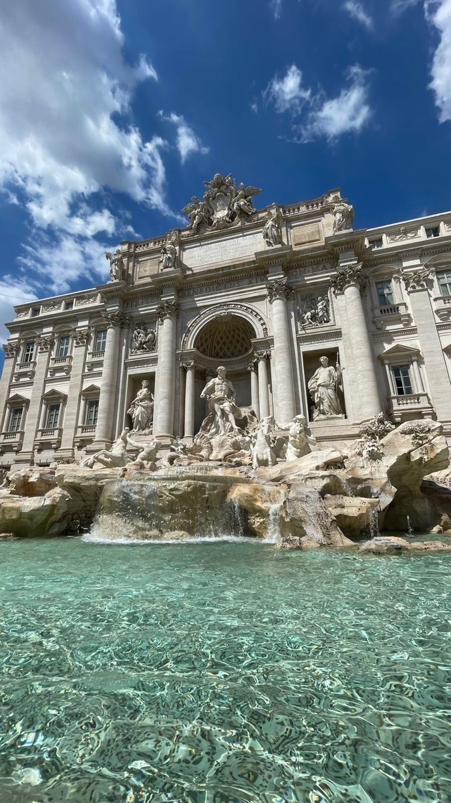
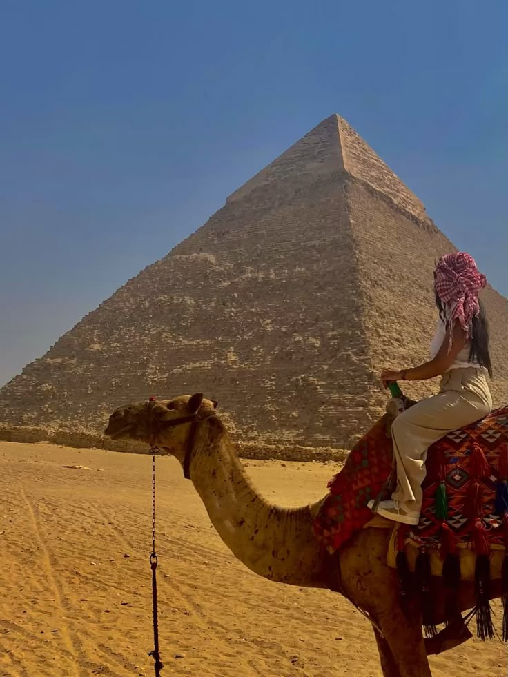

Meus Projetos
.jpg)
.jpg)
.jpg)
.jpg)
.jpg)


- 

- 
Monte Fuji/Japão
A jornalista Manuella Avelino viaja para Fujiyoshida, no Japão, para explorar a cultura local ao redor do Monte Fuji. Lá, conversa com moradores, aprende sobre a espiritualidade da montanha e descobre tradições artesanais. Ao subir parte do Fuji, sente uma conexão profunda com o lugar. De volta ao Brasil, percebe que a viagem mudou sua visão de mundo.
Tromsø/Noruega
A jornalista Manuella Avelino viaja para Tromsø, Noruega, para estudar a cultura local e as auroras boreais. Conhece pescadores, artesãos Sámi e cientistas, aprendendo sobre o fenômeno e suas lendas. Em uma noite gelada, presencia as luzes dançantes no céu e sente a grandiosidade da natureza. De volta ao Brasil, escreve sobre ciência e magia das auroras.
Kyoto/Japão
A jornalista Manuella Avelino viaja para Kyoto para explorar a cultura ao longo da linha de bondes Randen. No percurso, conhece moradores, visita templos e descobre tradições locais. Ao fim, percebe que Kyoto não é apenas um destino, mas uma experiência viva entre passado e presente.
Istambul/Turquia
Manuella Avelino, uma jornalista brasileira, viajou para Istambul para investigar a rica cultura da Mesquita Azul. Ao explorar seus impressionantes azulejos e arquitetura, ela se encantou pela beleza do lugar. Conversando com moradores, aprendeu sobre a tradição muçulmana e a hospitalidade turca. Cada história compartilhada a fez refletir sobre as semelhanças e diferenças culturais. Ao voltar para casa, suas experiências se transformaram em uma série de reportagens que inspiraram seus leitores a valorizar a diversidade cultural. Marca uma nova perspectiva em sua carreira e em sua vida.
Salar de Uyuni/Bolivia
Enquanto a jornalista Manuella Avelino caminhava sobre a vasta superfície de sal, sentia-se em um mundo de sonhos refletindo o céu azul e as nuvens brancas. Fascinada pela cultura local, ela entrevistou os habitantes sobre suas tradições e a importância do salar na vida cotidiana. Em suas anotações, capturava cada história de simplicidade e resistência, prometendo levar ao mundo a beleza única daquele rincão esquecido. Ao final da jornada, Manu descobriu que, às vezes, o verdadeiro tesouro está nas conexões que fazemos.
Acapulco/México
A jornalista Manuella Avelino chegou a Acapulco animada para explorar a cultura local. Fascinada pelas histórias de pescadores e dançarinos, começou a documentar suas vivências em um blog. Em seus relatos, Clara destacou a importância de preservar as tradições diante do turismo crescente. Ao final, percebeu que Acapulco era, na verdade, um lar escondido nas narrativas de seu povo.
Atlantis Paradise Island/Bahamas
A jornalista Manuella Avelino chegou ao Atlantis animada para explorar a cultura marinha e as atrações do resort. Enquanto nadava entre tubarões no aquário subaquático, ouviu histórias de proteção ambiental dos biólogos locais. Ela decidiu criar um documentário mostrando a interação entre os visitantes e a vida marinha. Com cada gravação, Lara enfatizava a importância de preservar esses ecossistemas. Ao final da jornada, percebeu que a verdadeira beleza de Atlantis estava na harmonia entre o homem e a natureza
Bahamas
O esquilo é um pequeno mamífero da família Sciuridae, que inclui diversas espécies encontradas em diferentes partes do mundo. Eles são conhecidos por sua agilidade, inteligência e hábitos de armazenamento de alimentos.
Turquia
O urso é um grande mamífero da família Ursidae, conhecido por sua força, inteligência e habilidades de adaptação. Existem várias espécies de ursos espalhadas pelo mundo, vivendo em diferentes habitats, desde florestas densas até regiões geladas do Ártico.
Italia
O lobo é um mamífero da família Canidae, a mesma dos cães e raposas. O mais conhecido é o lobo-cinzento (Canis lupus), que é o maior membro dessa família. Lobos são animais sociais e vivem em grupos chamados alcateias, com uma hierarquia bem definida.
Macaco
O macaco é um mamífero primata caracterizado por sua agilidade, inteligência e comportamento social complexo. Ele pertence à ordem Primates e pode ser encontrado em diversos habitats, como florestas tropicais, savanas e montanhas.